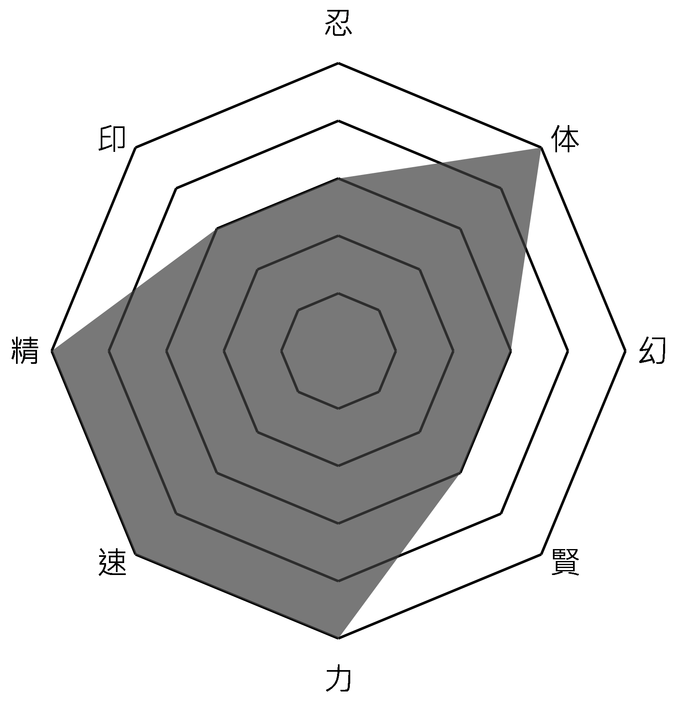

專業技能

高中時，因為學校熱食部真的有夠難吃，學校又有不能訂外食的規定，我便嗅到商機，賺錢最容易的辦法是創造人人都需要的東西，去創造價值，錢就會來，這時我在學校從事幫同學代購泡麵的生意，原本只是在上學途中順便到附近的便利店幫同學購買碗裝的泡麵，漸漸的我發現這樣一天才賺個幾十塊而已，我不如拿個碗在路邊拜，想要賺更多，只有提高售價以及降低成本這兩條路可走，提高售價這條路肯定是行不通，所以我發現一碗泡麵其包裝費占了很大的一部分，我便改從量販店購買袋裝的泡麵，再接洽食品材料行購買大量的紙碗來壓低成本，毛利率可達30%以上，不僅能幫同學購入價格較低廉的泡麵(佛心公司╰(⊙д⊙)╮佛心公司╭(⊙д⊙)╯)，自己也能從中賺取一些零用錢，因為低廉的價格及在學校就能取得的便利性，我的泡麵生意便在各年級間傳開，隨著代購的人數增多，我之後也有在IG創一個帳號來推廣，有時候一天中午半小時的淨利可以到1000塊以上，正所謂樹大招風，學校當然不可能容許這種商業行為發生在校園，我也有請一個替死鬼來幫我應對學校方的懲處以及問題，當然的我也跟他約定好他可以拿到每個月淨利的10%，這應該是一筆不錯的交易，在畢業的前一天我也有善盡企業責任，取之於社會用之於社會，發了一整天免費的泡麵給需要的人，總共在高中賺得10萬以上且順利的畢業，在畢業典禮上幾乎全校的人都有光顧過我的泡麵店(學校熱食部的難吃程度也可想而知了)，我也在畢業典禮上發表感言：感謝學校的種種規定以及難吃的福利社，形成這個獨佔且封閉的市場，讓我賺的盆滿缽滿。
大二上的時候被同學推坑玩虛擬貨幣，一開始入金15000台幣玩看看，由於我之前就有操作股票的經驗，所以對於這種趨勢反轉的多空操作都是駕輕就熟，漸漸的我就從本金的15000玩到60000、70000台幣，也慢慢的從買現貨變成槓桿合約開好開滿，5x、10x、20x越玩越大，一天4000、5000在賺的，最後是因為一支之前很紅的狗狗幣 Dogecoin (DOGE)因為一次的判斷錯誤，我做多看漲它就一直跌，不斷的攤平成本，最後6、7萬歐印身家，搏一搏，單車變摩托，賭一賭，摩托變吉普！ 要想富，下重注，不怕輸的苦，就怕斷了賭！ 小賭養家餬口，大賭發家致富！
然後他就爆倉了......一切都是紙上富貴紙上富貴，賺個幾千幾萬， 但久了之後發現，其實賺的錢沒有兌現出來，「那個都是數字而已」。
這是浪費我最多時間的一個遊戲，從小五開始玩，至今也差不多十年了，從S8上白金之後到今天都還卡在白金，今年陪甲班許書瑜同學打上鑽石，然後他就開始戳我了，希望老師或助教如果有緣還可以教到他的話請幫我把它當掉。
高中畢業後於私立興儒文理短期補習班擔任數理輔導老師的工作，主要是幫助學生輔導上課不懂的地方，多為一對一至一對五的個別數理輔導，小班制的個別輔導可以針對每個學生找出其問題所在，以淺顯易懂的例子，生動活潑的教學方式，引導孩子獨立思考，進而發揮孩子的數理邏輯。
曾於際標資訊科技股份有限公司擔任實習生，這間網路公司是由我爸的朋友所創立的，專營系統規劃、分析及設計，其比較著名的網站"台灣黃頁"媒合中小企業，協助企業開拓市場，增加曝光及訂單，我的工作主要是將資料打進後台資料庫，以及基本的文書處理及商品圖的PS美編，在這份工作中體驗到台北高壓的職場環境，了解到到面對主管及老闆的問題不能說不知道，只能想辦法找出上級要的答案，也學習到PS等專業修圖軟體的熟練度。
曾於勤華企管有限公司擔任實習生，這間公司是由我爸媽所創立的，專門接政府所委託辦理的職業訓練課程及證照考取，我主要負責文書處理、建檔以及管理課程簽到，在這份工作中學習到和人之間的溝通技巧及對於word、excel等文書軟體的熟練度，因為是爸媽開的公司，我覺得沒什麼挑戰性，工作內容感覺也不是我喜歡的，所以我做沒多久就走了。
於大一至大二時擔任本校警衛室工讀生，一開始去的時候以為當警衛可以有配槍，結果沒有，使我相當失望，負責管理車輛的進出放行及收費，校園的第一線守護著大家的安全，蠻有趣的部分就是可以遇到不同的人，有時候警衛大哥也會跟我說哪幾台車是校長或是哪個處室的主任叫我直接放行就好，有時學校舉行校慶等大型活動時也會負責指揮交通，使校內的車輛能夠有條不紊的停放。
於暑假期間擔任本校事務組的澆水工讀生，主要負責校內花草的澆灌照護，但是這個工作需要早上六點就開始，因為早晨的氣溫不會使澆下去的水太快蒸發，使土表的水能滲入植物的根部，我常常一邊澆水一邊欣賞著日出的晨曦，晨景的溫存卻被我這樣偷嘗了不少，最後我想問一句：你見過凌晨六點的中原嗎？我見過，就只剩下滿天的繁星跟水滴灑落在葉片的聲音陪伴著我。
於大二時擔任本校衛生保健組工讀生，主要負責衛保組櫃檯的行政事務，有同學來看病掛號或是擦藥時，都是由我掛號登記，也可以從中學習到一些實用的衛教知識，有時候有一些外籍生來擦藥的時候，我不太知道要怎麼應對時只能在那A..A.AA...A...A....A...(手語
於大二時擔任興儒補習班國中部三年級的助理導師，這是我接的第一個正職工作，因為我一向都認為我為人正直，不接一份正職工作怎麼說得過去呢，這間補習班也是我從國小五年級一直補到國中畢業的， 轉眼過去， 原本教我的老師已經變成分部的主任再變成我的上司，角色位置的轉換我也從坐在台下聽講變成站在台上檢討考卷的助教，解題以及教導他們讀書的方式，希望學生們能跟我當初一樣， 努力並且繼續堅持下去，所有累積的努力，總有一天會有好的收穫！念書最後還是得靠自己，唯有自己才能改變成績，而興儒做的，就是幫助學生改變自己！
六年前曾為興儒學子的我 在興儒細心教導下漸漸茁壯 愛的循環使我回到最初起點 秉持著教育的熱忱回饋興儒